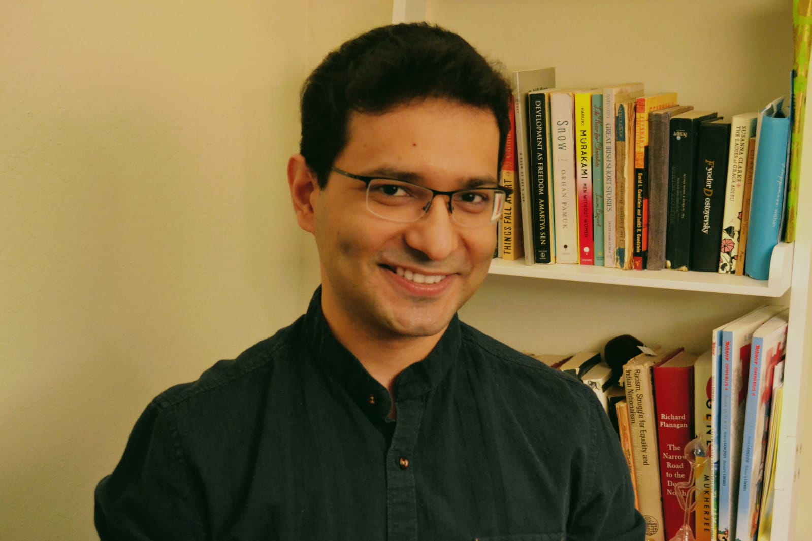

<div class="blurb">
	<p align=”justify”>I'm a <a href = "https://en.wikipedia.org/wiki/Physical_cosmology">cosmologist</a> and currently a <a href="https://www.fnal.gov/pub/forphysicists/fellowships/david_schramm/theoretical/index.html">Schramm Fellow in Theoretical Astrophysics</a> at <a href = https://www.fnal.gov/>Fermilab</a>. My research focuses primarily on the connections between fundamental physics at microscopic scales, and the formation and evolution of structures, like galaxies and voids, out to the largest scale we can see (and not see!) in the Universe. I use a wide range of techniques - including developing new simulation methods, identifying useful summary statistics for cosmological data, and forecasting parameter constraints for various upcoming cosmological surveys, to help probe these connections in detail. You can find more about my research <a href="/research">here</a>.</p>
	<p align=”justify”>I received my undegraduate degree in Physics from <a href="https://www.ststephens.edu/">St. Stephen's College</a>, in Delhi, India, and my Master's degree from the <a href="https://www.tifr.res.in/">Tata Institute of Fundamental Research</a>, in Mumbai, India. I received my Phd in Physics at the <a href="https://physics.illinois.edu/">University of Illinois, Urbana-Champaign</a> working with <a href="http://www.perimeterinstitute.ca/people/neal-dalal">Prof. Neal Dalal</a>. Before joining Fermilab, I was a KIPAC fellow at the Kavli Institute for Particle Astrophysics and Cosmology (<a href="https://kipac.stanford.edu/">KIPAC</a>) at Stanford University and SLAC National Accelerator and Laboratory. While at KIPAC, a large fraction of my research happened in collaboration with various members of <a href="https://tomabel.org/Home/Welcome.html">Tom Abel</a> and <a href="https://www.risawechsler.com/">Risa Wechsler</a>'s research groups. </p>
</div><!-- /.blurb -->